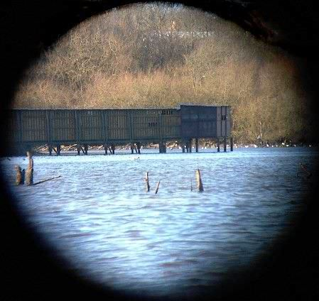

The bird hide taken from the same position as the main picture you just clicked on, but through one eyepiece of my 8x30 binoculars. No tripods or connectors, just with camera and binoculars jammed against a branch and hope for the best.